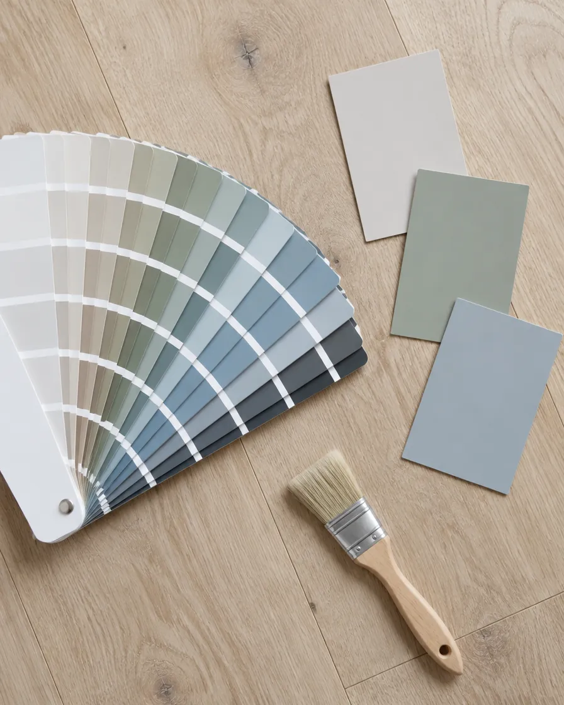
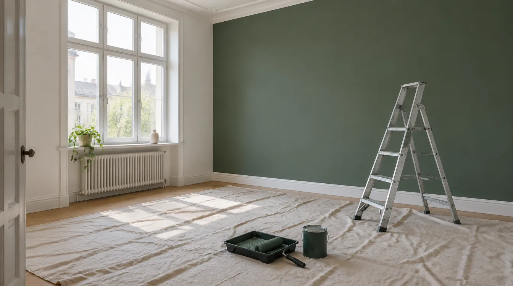
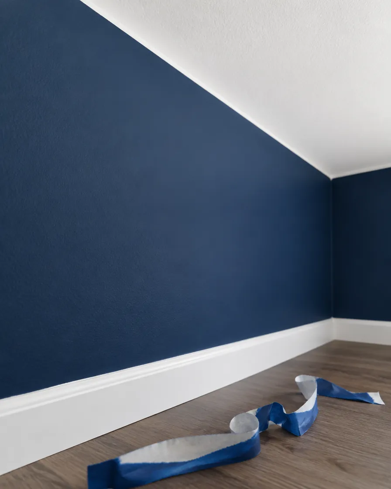
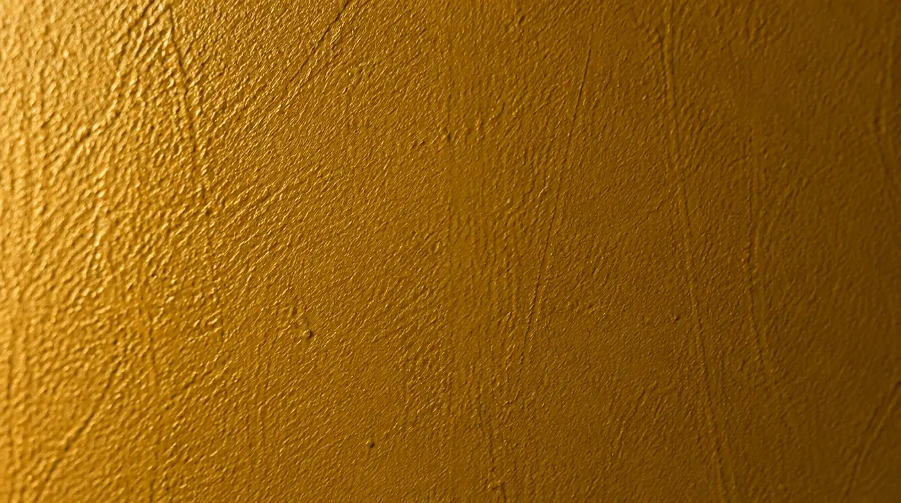

Työn kulku
Neljä vaihetta siistiin jälkeen.
- 1
Sävy ja arvio
Tulemme paikalle sävymallien kanssa, mittaamme pinnat ja annamme kiinteän tarjouksen.

- 2
Suojaus
Lattiat peitetään, huonekalut siirretään ja suojataan. Ovet ja pistorasiat teipataan.

- 3
Pohjatyöt
Kolot tasoitetaan ja hiotaan. Hyvä pohja ratkaisee, miltä seinä näyttää viiden vuoden päästä.

- 4
Maalaus ja siivous
Kaksi kerrosta tasaisesti. Lopuksi teipit pois, huonekalut paikoilleen ja imurointi.
